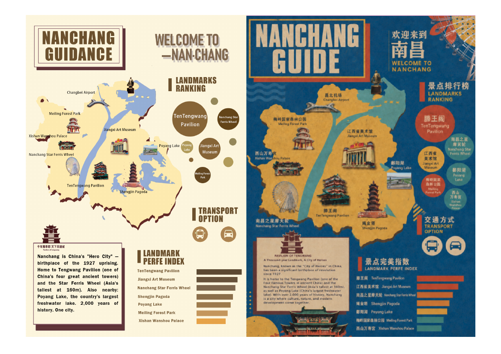
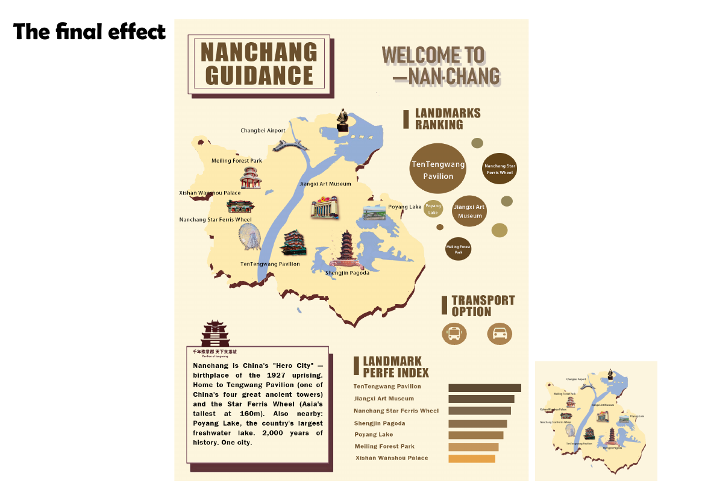
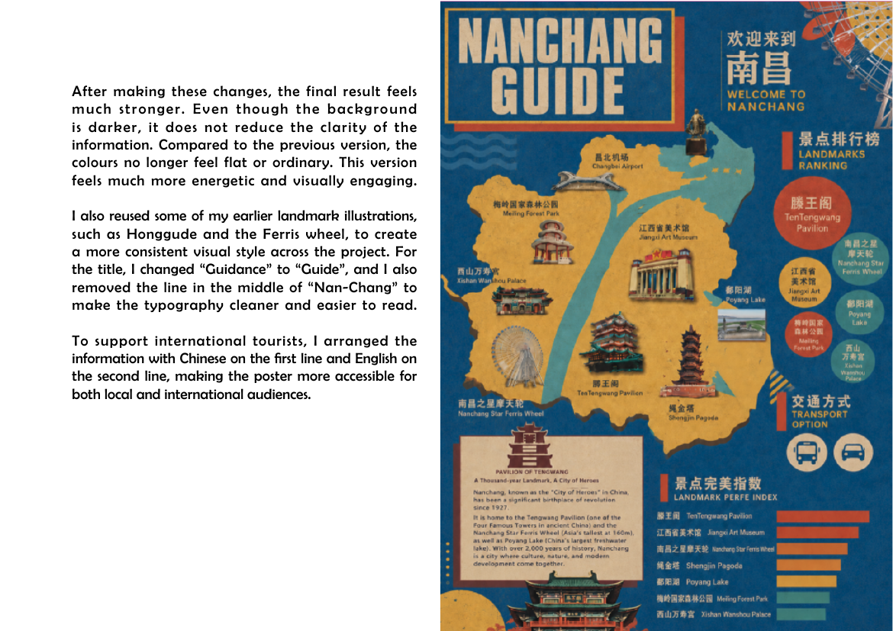

Creative Portfolio Hub / Branding
Nanchang City Symbols
Visual Identity System / Cultural Communication / Print Design
A visual communication project exploring how simplified city symbols can introduce Nanchang to international audiences through postcards, stamps, posters, stickers, calendars and print-based visual storytelling.
Section 01
Project Concept
Nanchang City Symbols creates a city visual identity system based on three landmarks: Tengwang Pavilion for history, Star Ferris Wheel for modern life and Jiangxi Art Museum for culture. The aim is to introduce the city through simple, recognisable and language-independent symbols.


Section 02
Research & Direction
The research looked at city branding, wayfinding and tourist communication. Instead of relying on long explanations, the visual direction focuses on simple landmark forms, clear information hierarchy and symbols that can work across languages and cultures.
Section 03
Icon Development
The icon process moves from architectural references into simplified graphic forms. I tested Tengwang Pavilion details, Chinese character structure and type-symbol lockups to create a mark that remains recognisable at different scales.

Section 04
Visual System
The visual system uses a consistent symbol, colour palette and light/dark application logic. These tests helped check whether the identity could stay coherent across posters, printed formats and object mockups.


Section 05
Applications
The identity was tested across tourism and print applications, including poster systems, calendar typography, clothing mockups and promotional outcomes. This section shows how the system can extend beyond a single logo into a broader communication language.



Section 06
Final Outcome 01
Final tourism poster combining landmark symbols, ranking information, transport icons and bilingual communication to introduce Nanchang to international visitors.
Section 07
Final Outcome 02
A set of print-based applications including calendars, stamps, clothing and souvenir-style objects, showing how the visual identity system can extend across different formats.
Reflection
This project does not attempt to represent the whole complexity of Nanchang. Instead, it tests how a limited set of simplified visual symbols can create an accessible entry point for international audiences. The challenge was to balance cultural identity, visual clarity and practical application across different printed formats.